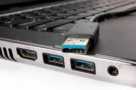

instalacion de sistema operativo
Definicion
La instalación del sistema operativo es un proceso crítico en el que se establece el software básico necesario para que un dispositivo electrónico pueda funcionar de manera efectiva. Este proceso implica la configuración inicial del sistema operativo, que incluye la instalación de componentes esenciales como el kernel, los controladores de dispositivo y las utilidades del sistema. La instalación del sistema operativo proporciona la base sobre la cual se ejecutarán todas las aplicaciones y procesos en el dispositivo, permitiendo que los usuarios realicen tareas como la gestión de archivos, la navegación por internet y la ejecución de programas.
Tipos de instalacion:
 Los tipos de instalación se refieren a los diferentes métodos utilizados para instalar un sistema operativo en un dispositivo. Algunos de los tipos comunes de instalación incluyen la instalación limpia (Clean install), que implica instalar el sistema operativo en un disco duro vacío; la actualización (Upgrade), que actualiza un sistema operativo existente a una versión más reciente; la instalación dual (Dual boot), que permite tener dos sistemas operativos diferentes en un mismo dispositivo; y la instalación de red (Network installation), que instala el sistema operativo a través de una conexión de red.
Los tipos de instalación se refieren a los diferentes métodos utilizados para instalar un sistema operativo en un dispositivo. Algunos de los tipos comunes de instalación incluyen la instalación limpia (Clean install), que implica instalar el sistema operativo en un disco duro vacío; la actualización (Upgrade), que actualiza un sistema operativo existente a una versión más reciente; la instalación dual (Dual boot), que permite tener dos sistemas operativos diferentes en un mismo dispositivo; y la instalación de red (Network installation), que instala el sistema operativo a través de una conexión de red.
Características del proceso de instalación:
 Las características del proceso de instalación se refieren a los aspectos distintivos del proceso de configuración del sistema operativo. Estas características pueden incluir la presencia de una interfaz gráfica de usuario que guía al usuario a través del proceso de instalación, un asistente de instalación que proporciona instrucciones paso a paso, la compatibilidad de hardware que garantiza que el sistema operativo funcione con el hardware del dispositivo y la capacidad de personalización que permite al usuario configurar ciertas opciones durante la instalación.
Las características del proceso de instalación se refieren a los aspectos distintivos del proceso de configuración del sistema operativo. Estas características pueden incluir la presencia de una interfaz gráfica de usuario que guía al usuario a través del proceso de instalación, un asistente de instalación que proporciona instrucciones paso a paso, la compatibilidad de hardware que garantiza que el sistema operativo funcione con el hardware del dispositivo y la capacidad de personalización que permite al usuario configurar ciertas opciones durante la instalación.
Preparación para la instalación:
![]() La preparación para la instalación incluye todas las acciones previas necesarias antes de iniciar el proceso de instalación del sistema operativo. Esto puede incluir la revisión de los requisitos del sistema para asegurarse de que el dispositivo cumpla con los estándares mínimos, la realización de copias de seguridad de los datos importantes para evitar la pérdida de información y la preparación de medios de instalación, como discos ópticos o unidades USB.
La preparación para la instalación incluye todas las acciones previas necesarias antes de iniciar el proceso de instalación del sistema operativo. Esto puede incluir la revisión de los requisitos del sistema para asegurarse de que el dispositivo cumpla con los estándares mínimos, la realización de copias de seguridad de los datos importantes para evitar la pérdida de información y la preparación de medios de instalación, como discos ópticos o unidades USB.
Arranque desde el medio de instalación:
El arranque desde el medio de instalación es el proceso de iniciar el dispositivo desde un medio externo, como un DVD o una unidad USB, que contiene los archivos de instalación del sistema operativo. Esto permite que el dispositivo acceda a los archivos de instalación y comience el proceso de configuración del sistema operativo.
Selección de idioma y teclado:
 Durante el proceso de instalación, se solicita al usuario que seleccione el idioma y el diseño del teclado que se utilizarán en el dispositivo. Esta selección determina la configuración regional del sistema operativo y garantiza que el usuario pueda interactuar con el dispositivo en su idioma preferido y con un teclado que sea compatible con sus necesidades.
Durante el proceso de instalación, se solicita al usuario que seleccione el idioma y el diseño del teclado que se utilizarán en el dispositivo. Esta selección determina la configuración regional del sistema operativo y garantiza que el usuario pueda interactuar con el dispositivo en su idioma preferido y con un teclado que sea compatible con sus necesidades.
Particionamiento del disco:

Copiar archivos de instalación:
 Después de seleccionar la configuración inicial, los archivos de instalación del sistema operativo se copian desde el medio de instalación al disco duro del dispositivo. Este proceso asegura que los archivos necesarios para ejecutar el sistema operativo estén disponibles localmente en el dispositivo, lo que permite una instalación más rápida y eficiente.
Después de seleccionar la configuración inicial, los archivos de instalación del sistema operativo se copian desde el medio de instalación al disco duro del dispositivo. Este proceso asegura que los archivos necesarios para ejecutar el sistema operativo estén disponibles localmente en el dispositivo, lo que permite una instalación más rápida y eficiente.
Configuración inicial:
Una vez que los archivos de instalación se han copiado al disco duro, se realiza la configuración inicial del sistema operativo. Esto puede incluir la configuración de la red para permitir la conectividad a internet, la creación de cuentas de usuario para permitir el acceso al dispositivo y la configuración de otras opciones importantes, como la zona horaria y las preferencias de energía.
Reinicio y configuración post-instalación:
 Una vez completada la instalación inicial del sistema operativo, el dispositivo se reinicia para aplicar cualquier cambio y completar el proceso de configuración. Después del reinicio, es posible que se requieran configuraciones adicionales, como la instalación de controladores de dispositivo adicionales, la actualización del sistema operativo con parches de seguridad y la instalación de software adicional para satisfacer las necesidades específicas del usuario. Este proceso finaliza la instalación del sistema operativo y prepara el dispositivo para su uso continuado.